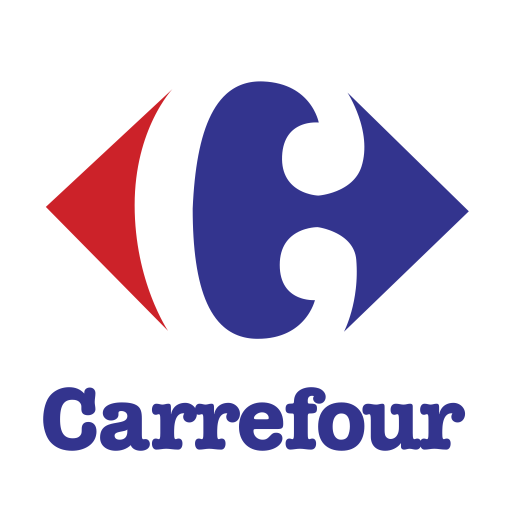
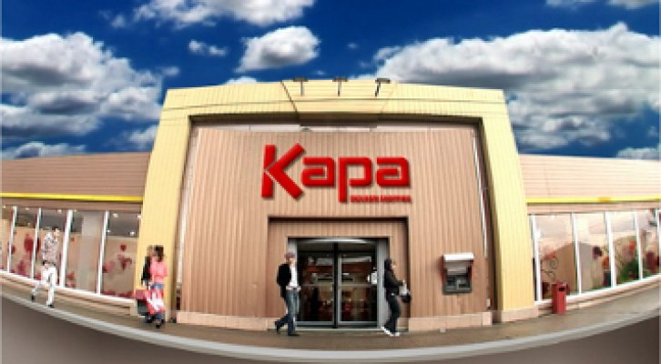

Iulius Mall Timisoara is a large shopping center in Timisoara, opened in October 2005.
It was built after an investment of 45 million euros and is one of the largest shopping centers in Romania.
You can find in here everything that you need from cheap to most expensive items, there are shops for everything and everybody.
Food court is great, Cinema City is also available, Caffe bars pastries, kids place. Not only you can spend whole day here but you will acctually need whole day. Good choice of brands, you can cruise around for hours, but prepare to hunt first for parking place.
 Site Carrefour: https://www.carrefour.ro/
Address: Calea Șagului nr. 100, Timișoara
Program:
Monday-Sunday: 08–22
Phone: 0374 432 800
Shopping City Timisoara brings to its clients the most famous fashion brands, footwear, accessories, perfumery, sports articles and articles for children, but also the most generous offer of entertainment and leisure in the west of the country.
The entire range of products and services is perfectly suited to the needs of the Timisoara community.
Program: Monday-Sunday :10-22

Web :www.kapacenter.ro
Address: Timișoara, Divizia 9 , nr. 2
This is the place where you can go if you want to buy formal outfits( wedding dress, prom dress, suit) at an affordable price. If you want to buy casual clothes, this is not the place for you.
The first Jumbo store in the country appeared in Timisoara. It's a cheerful place full of home decorations, baby toys,school supplies and more.
Prices are affordable and if you come into the store, it's almost impossible not to go out with a whole bag of things.